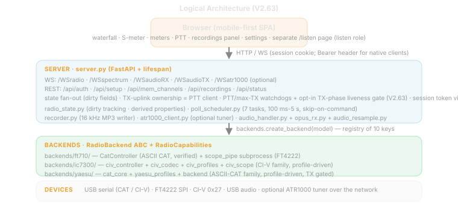
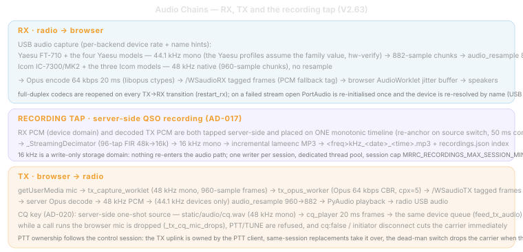
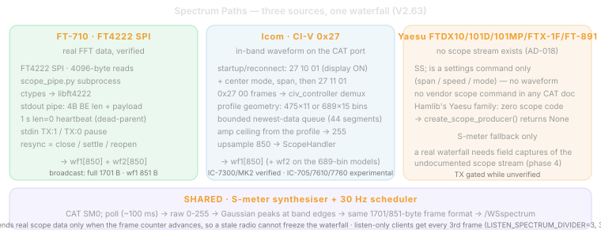
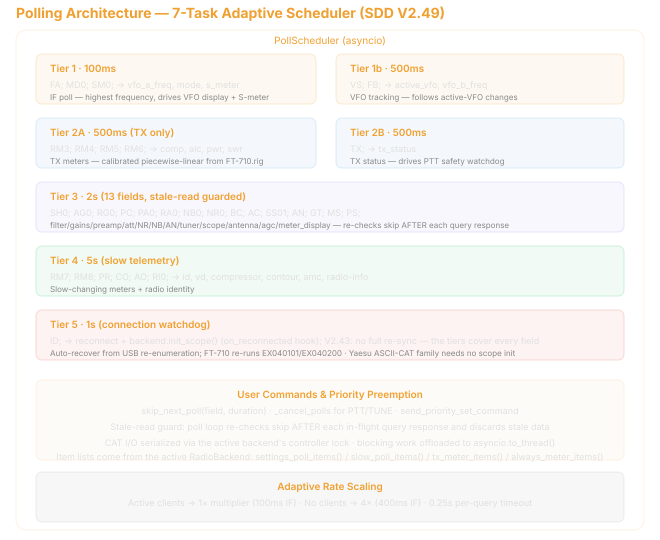
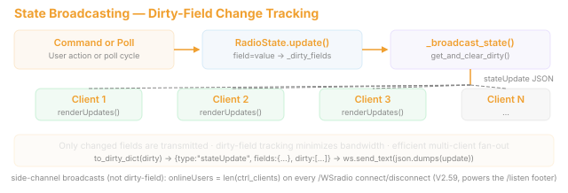
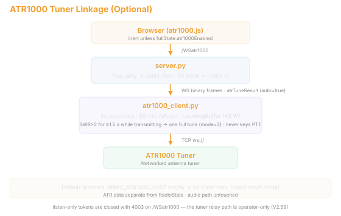

9. Architecture Overview (ART 0512)
9.1 Logical Architecture

9.2 WebSocket Endpoints
9.2.1 /WSradio (JSON text)
Control channel. Carries all radio commands, state updates, and memory management.
Server → Client:
{"type":"fullState","data":{...},"radioModel":"...","radioDisplayName":"...","capabilities":{...},"bands":[...],"modes":[...]}— initial sync on connect;capabilitiesis backend-specific (bands, modes, filters, ATT/PRE steps, meter visibility, scope banner, etc.){"type":"stateUpdate","fields":{...},"dirty":[...]}— partial changed-field update{"type":"value","field":"...","value":...}— single-value query response{"type":"memChannels","channels":[...]}— memory channel broadcast{"type":"recordingState","recording":{...}}— server-side QSO recording snapshot (AD-017), broadcast on change{"type":"cqState","cq":{...}}— one-shot CQ call snapshot (AD-020):state=idle|calling|complete|aborted, plusframes_sent/frames_total/started_by/reason; broadcast on change and at 1 Hz while calling{"type":"onlineUsers","count":N}— online control-client count, broadcast on every /WSradio connect/disconnect (V2.59; shown in the listen page footer, ignored by UIs that do not know the type){"type":"pong"}— keepalive response
Client → Server:
{"type":"set","field":"...","value":...}— command (40+ supported fields, incl.recordingandcq){"type":"get","field":"..."}— query current value{"type":"memSave","channels":[...]}— save memory channels{"type":"memDelete","index":N}— delete memory slot{"type":"ping"}— keepalive
Listen-only role (V2.59): a session authenticated with MRRC_LISTEN_PASSWORD gets its token tagged in _listen_tokens and is redirected to the /listen page. Enforcement is server-side: _handle_ws_message refuses every message except ping/get/memLoadAll/memRecall and set on {freq, vfo_a_freq, vfo_b_freq, mode} (legacy field:value text goes through the same gate); /WSaudioTX and /WSatr1000 close listen tokens with code 4003; the auth middleware returns 403 for non-GET /api/* (except /api/auth/logout). RX audio and spectrum stay open — listening is the point.
9.2.2 /WSaudioRX (binary)
Format: 1-byte codec tag (0x00=PCM, 0x01=Opus) + payload.
Server captures Int16 mono from the selected radio’s USB audio (44.1kHz for FT-710, 48kHz for IC-7300/MK2) → resamples to 48kHz if needed → Opus encodes (64kbps default) → broadcasts to all audio_rx_clients at 20ms intervals. Parallel to the encode path, _rec_tap_rx() hands the same device-domain PCM to the recorder (which is why the RX loop no longer idles while a recording runs). Browser decodes via WASM OpusDecoder (or Int16→Float32 for PCM) → AudioWorklet playback with jitter buffer.
9.2.3 /WSaudioTX (binary + text)
Binary: 1-byte codec tag + encoded mic audio. Server decodes (Opus→PCM or pass-through PCM) → _rec_tap_tx() copies it to the recorder (only while not transmitting, to avoid the radio’s sidetone) → queues to PyAudio output stream → played to the selected radio’s USB audio input (44.1kHz for FT-710 with resample, 48kHz native for IC-7300/MK2).
Text: "s:" = stop TX; "m:rate,encode,..." = settings.
9.2.4 /WSspectrum (binary)
On the wire there is one version byte, 0x01, and two lengths. full = 0x01 + 850 bytes wf1 + 850 bytes wf2 = 1701 bytes. wf1 = 0x01 + 850 bytes wf1 = 851 bytes. The 851-byte frame is what this section used to call “v1”: it was specified here and never shipped — every server build sent the 0x01 byte with the 1701-byte length. The “v2” naming is retired rather than implemented, and the full frame must not be re-tagged 0x02: iOS guards version == 0x01 (SpectrumProcessor.swift:57) and would silently drop every frame. No client draws wf2 anyway — it is all zeros on both radio families.
Which length a socket gets, and how often, is its profile (spectrum_profile.py, AD-025): high = full every tick, mid = wf1 every 2nd tick, low = wf1 every 4th. A socket declares its tier with a text frame {"type":"spectrumCaps","profile":"mid"}; until it does, the server sends high — byte-for-byte the pre-AD-025 stream, because the shipped Android parser rejects any length that is not 1701 (SpectrumFrame.kt:14-15). Listener-password sockets default to the server-internal listen tier (full, every 3rd tick), which is the behaviour they have had since V2.59.
The broadcaster is scheduled at 30 Hz. Real scope data (FT4222 SPI for FT-710, CI-V 0x27 for the Icom family) is sent only when ScopeHandler._frame_count advances — measured 11.1 fps on the FT-710, so clients do not receive duplicate hardware frames; the S-meter fallback is regenerated on every broadcast tick (~30 fps) and passes through the same per-profile gate. A divider is a ratio, not an absolute rate: LISTEN_SPECTRUM_DIVIDER = 3 yields ~3.7 Hz on the real-scope source and ~10 Hz in the fallback state, cutting bandwidth by two thirds either way (V2.59).
9.3 RX Audio Signal Chain

See upper half of diagram.
9.4 TX Audio Signal Chain
See lower half of diagram.
TX runs at 48 kHz throughout the codec domain — browser capture and Opus encode/decode. The server bridges to the radio’s native USB audio rate: the FT-710 uses 44.1 kHz with frame-aligned resampling (960↔︎882 = exactly 20 ms, ratio 160:147); the IC-7300/MK2 uses 48 kHz native with no resample. This eliminates the v1.0 sample-rate mismatch (16 kHz mic → 48 kHz playback) and prevents a Windows shared-mode mix rate from bypassing the device-domain bridge.
The playback queue pre-buffers 60 ms and caps latency at 400 ms. Oldest-frame drops at that cap are counted as queue_drops in the per-PTT session log alongside received, decoded, written, write-error, peak, and non-owner counters. A healthy RF acceptance run therefore requires decode_fail=0, write_err=0, queue_drops=0, and non_owner_drops=0; sustained queue drops identify a host-output pacing problem even when Opus decoding succeeds. Startup and stream-open logs identify the selected device index/name, PortAudio host API, advertised default rate, actual opened rate, and channel count; IC-7300/MK2 should report actual=48000Hz for both RX and TX.
9.5 Spectrum Signal Chain
9.5.1 Real Scope Path (FT4222 SPI for FT-710, CI-V 0x27 for IC-7300/MK2)
FT-710: FT4222 SPI → scope_pipe.py subprocess → 850-point wf1/wf2 → ScopeHandler.
IC-7300/MK2: startup/reconnect sends scope display ON (27 10 01), Center mode, span, then waveform-data output ON (27 11 01).
Yaesu FTDX10 / FTDX101D / FTDX101MP / FTX-1F / FT-891: no scope path exists. The Yaesu scope waveform is not part of any CAT reference (SS sets span/speed/mode only) and Hamlib’s entire Yaesu family contains no scope-data code, so these backends return no scope producer; the server’s S-meter synthesiser keeps /WSspectrum alive and the frontend is unchanged. CI-V 27 00 frames → civ_controller.py demux → bounded queue sized 4 × scope_seq_max (44 segments on 475-bin models, 60 on the 689-bin IC-7610/IC-7760; drop oldest on overflow) → bin scale (0..160 or 0..200 from the profile) → upsample to 850 → ScopeHandler. A bin count or segment count that disagrees with the profile logs once and is adopted, so a wrong profile cannot freeze the waterfall. Center information carries center frequency plus half-span; Fixed, SCROLL-C, and SCROLL-F carry lower and upper edges. The browser constrains CI-V scope speed to FAST/MID/SLOW.

9.5.2 S-Meter Fallback (Synthetic Spectrum)
See lower half of spectrum diagram.
9.6 Backend Polling Architecture

9.7 State Broadcasting

9.8 ATR1000 Tuner Linkage (optional)

Four linkage behaviors:
- Freq change → relay apply —
_broadcast_stateon vfo_a_freq/vfo_b_freq/active_vfo dirty callsnotify_freq; learned LC values fromatr1000_tuner.json(TunerStorage: learn gate SWR 1.0–1.8, 1kHz keys ±5kHz nearest, atomic writes) are pushed to the tuner (5s write throttle). - TX on/off →
notify_tx— switches the tuner to device push mode and opens the learning window (LearningBuffer, 4-sample stability). - Tune assist — client
{"type":"atrTune"}runs_atr_tune_assist()server-side: TX2 carrier → skip if SWR≤1.6 → snapshot relays → full tune (mode=2) → keep+learn if SWR improved ≥0.02 else rollback → carrier always dropped infinally(ATR_TUNE_* constants: 0.3s settle, 5s min, 45s deadline, 0.8s compare settle, 2.5s meter wait). - High-SWR auto full tune — the client’s METER path runs a guard (instance state, no module globals): while the operator transmits (measured power ≥5 W) and SWR stays >2.0 for ≥1.5 s, it queues ONE full-tune frame (mode=2, sent by the worker through the existing
_pending_*/_wakechannel). 30 s cooldown; 3 consecutive no-improvement tunes per frequency, thenauto_giveupuntil the frequency changes or the SWR recovers; a QSY >1 kHz or a fresh relay change restarts the run. After tuning clears (relay-stable >5 s / same-relay confirm / TX end / 45 s timeout / deviceTUNE_STATUS=0), a 0.8 s-later comparison writes the relays back withlearn(force_update=True)only when SWR improved ≥0.02 and the result is ≤1.8 — the relays are never rolled back. Auto-tune phases reach the UI asatrTuneResultwithauto=true(6 phases); a disconnect or a failed send emits theauto_abortedterminal phase. The guard never keys the radio: it acts only inside an existing transmission and sends nothing but a tuner frame (SDD ch15), which is also why learning now keys off measured power (≥3 W) instead of the server-side TX signal — panel PTT and external-software transmissions learn too.
Default-disabled isolation: MRRC_ATR1000_HOST empty (default) means no client task, no network traffic, linkage hooks short-circuit, /WSatr1000 closes with code 4000, and the frontend module is never initialized. ATR data is deliberately kept out of RadioState (separate channel, same precedent as spectrum); the audio path is untouched.
9.9 FT8 Decode Path: Fast Default + Adaptive Cascade
FT8 decodes each 15 s slot through a two-stage decoder (design spec docs/superpowers/specs/2026-10-13-ft8-fast-path-cascade-design.md; performance analysis docs/ft8-w103d-decode-perf-analysis.md §9):
- Fast path (default) —
wsjt_ft8_decode_fastinft8/dsp/wsjt_fast.c, thekgoba/ft8_libC decoder (kiss-fft, no AP, no OSD, single pass) compiled into the samelibwsjt_core(so the single locked ctypes boundary is preserved) and reached through the oneft8/core/binding.py. This isDecodePath.FAST; it measures ~0.15 s on the W103D versus ~2.2 s for the WSJT-X deep path. All its knobs stay at the upstream defaults — the A53 spike (analysis §9) showed every faster setting buys time only by trading away weak-signal sensitivity, which is exactly what the cascade exists to protect. - Adaptive cascade —
ft8/engine/cascade.py’sCascadingDecoderruns the fast path first, then re-decodes the same slot on the deep WSJT-X path only when a criterion fires: AP context active (my_callset andqso_progress > 0), suspected miss (len(fast) < min_decodesor the peak SNR belowmin_peak_snr = -26), or an operator’s one-shot “deep decode this slot” request. The two batches are merged (merge_batches, keyed on(frequency, dt)within tolerance, deep wins; the union is never smaller than always-deep). A budget guard refuses the escalation when the time left before the 4.0 s decision cutoff is below the deep path’s measured lower bound, counting adeadline_riskinstead — never a late result. (The cutoff was 2.5 s until 2026-10-13, sized for a single decode path; with the cascade it has to cover the fast path’s landing delay plus the deep path, and 2.5 s admitted neither, so the guard refused every policy-approved escalation — measured 263 refusals / 0 escalations over one W103D field window.) Field-validated after the fix (2026-10-14, same box): 21 escalations over the first 60 slots,late=0anderrors=0in all three counter lines — no batch crossedboundary + 4.0 s, so the 4.0 s cutoff and the 2.138 s deep pass fit together in production. The escalation rate itself is not yet settled (window deltas 65% / 35% / 5% across 15 minutes, the first window being the 3.4–8.4 min immediately after the restart), and the counter line counts slots, not messages (decodesis incremented once per decode batch,orchestrator.py:328), so it cannot answer “how many extra messages did the deep path earn”; that number does not exist yet (docs/ft8-w103d-phase-a-baseline.md§3).
CascadingDecoder.decode matches SupervisorDecoder.decode exactly, so Orchestrator is unaware of which path ran and the 4.0 s late rule is unchanged; the cascade just decides before it. A fast-path failure (or a missing decode_paths bit) falls back to the deep path, so the fast path can never decode fewer messages than before. Observability: OrchestratorCounters gains fast_decodes and escalations (fast_decodes + escalations <= decodes; a fast-path failure that falls back counts as neither), CascadingDecoder carries deadline_risk, exposed via runtime.cascade_stats, and LatencyHistogram.record gained a path dimension with bucket key <path>/p<profile>/t<threads> (path ∈ {fast, improved}). Since 2026-10-14 the same counters also reach the log without an HTTP call: every slot line ends with [<path> escalated? late?] and every runtime._COUNTERS_EVERY_SLOTS (20) slots a decode counters after N slot(s): decodes=… fast=… escalations=… (…%) late=… errors=… skipped=… line is emitted — N is counters.slots_started, the slots the engine saw, so a skipped slot (no ring data inside the grace window) shows up in the number instead of silently missing (the batch count _slots_logged only counts slots that produced a decode and is the log cadence, not the operator’s number). The field diagnosis that produced the 4.0 s fix had to be inferred from publish offsets, because a successful escalation logs nothing (cascade.py records only the refusals) and late existed only in the WebSocket frame — and two of those inferences were wrong before being retracted. Since 2026-10-14 the decode reply also carries cpu_seconds — the Worker process’s CPU time for that one decode (time.process_time(), i.e. all of its threads). Wall time cannot show fake parallelism: the deep path’s OpenMP region recomputes the whole symbol-spectrum per thread, so on the W103D threads 1→3 buys 1.46× less wall for 1.6× more CPU (analysis docs/ft8-w103d-decode-perf-analysis.md §8.2), and re-measuring across the full thread matrix on a second architecture shows the wall curve bottoming at 3 threads while the CPU curve keeps climbing (5.2× at 12 threads). The W103D’s own curve (measured on the box, 2026-10-14) bottoms at 2.138 s / 3 threads — the thread count production already runs — where one deep pass is 53% of the 4.0 s decision budget; cycles 1→3 is ~3×, so it cannot be afforded there at all (docs/ft8-w103d-phase-a-baseline.md). The clock is taken in the Worker, not in the parent: the parent’s process_time() would fold in the audio and spectrum threads, and RUSAGE_CHILDREN does not update for a child that is still alive. Measurement only — no decode, sequencing or TX behavior reads it.
9.10 FT8 Native Library: Built Per Platform, Shipped In Every Artifact
The FT8 engine is Python plus one native library (libwsjt_core.so / libwsjt_core.dylib / wsjt_core.dll), and since v1.27.0 that library is a component of every artifact rather than a hand-compiled extra (design spec docs/superpowers/specs/2026-10-13-ft8-packaging-design.md):
| Platform | Where the library comes from | What travels with it |
|---|---|---|
| W103D + Raspberry Pi images | built during the image build (packaging/common/mrrc-service-layer.sh runs ft8/dsp/build.sh), rebuilt by linux/mrrc_update.sh whenever the DSP sources’ digest changes |
the runtime packages (libgfortran5, libgomp1, libfftw3-single3) |
| macOS DMG | packaging/macos/build.sh builds it and packaging/macos/ft8_bundle.py collects the transitive dependency closure |
five dylibs (FFTW, gfortran, gomp, quadmath, libgcc_s), every load command rewritten to @loader_path — the build fails if any /opt/local reference survives |
| Windows installer | packaging/windows/build.ps1 builds it with MSYS2 mingw-w64 (cmake + ninja) |
the runtime DLL closure, walked with objdump -p rather than hard-coded (9 files, ~16 MB) |
ft8/core/worker.py:default_library_path() resolves the platform’s own name at the PyInstaller _internal root (app_root()), and the binding hard-checks the ABI on load, so an old library next to new Python refuses to start instead of silently decoding differently. <boost/crc.hpp>’s include closure is vendored (ft8/dsp/vendor-boost/) so no platform needs Boost installed.
Two defects this layering was hiding, both found by clean-room runs of the packaged apps (2026-10-13) and both fixed here:
- a fresh install has no
<runtime>/ft8/directory, andsqlite3cannot create missing parents —RepositoryraisedOperationalErrorand the composition guard silently ran SSB-only; - a frozen bundle must call
multiprocessing.freeze_support(), or the DSP worker’s spawn child re-entersmain(), argparse exits 2, and FT8 reportsspawn_failed.
9.11 NanoVNA Antenna Bench (AD-030)
A second serial instrument on the box, deliberately outside the radio’s CAT path (design spec docs/superpowers/specs/2026-10-18-nano-vna-design.md, operator manual docs/nano_vna.md):
browser ──REST /api/nano/*──> server.py（守卫 + 一把 asyncio.Lock）
└── asyncio.to_thread ──> nano/vna.py ──> /dev/ttyACM*
nano/analysis.py（纯数学）
nano/flash.py（ROM DFU）- Data path: one command, one frame.
scan_bin <start> <stop> <points> <mask>returnsu16 mask, u16 pointsfollowed byu32 freq+f32 re/imper enabled array; the frame length must equal4 + points × (4 + 8×(1+s21))or the whole frame is discarded and rescanned — half a frame draws a plausible fake curve, which is worse than an error. Measured: 401 points 1.0–1.3 s, 101 points 0.32 s. - Three field-found transport defects (2026-10-18, real hardware): a command written right after
reset_input_buffer()is dropped (device still talking — measured asscan_binanswering nothing at all), a quiet-period frame terminator truncates a 401-point sweep between segments, and stripping only the CRLF of the echo line leavesdata 0as a “data” row. Hence: sync toch>before writing (in_waitingfirst), read exactly the frame length, drop the echo line whole. - Why
scan_binand notdata: aftersweep,data 0still holds the previous array (the device sweeps asynchronously) — measured 1.0 apart at 54 MHz.scan_bincarries frequency and data from the same sweep, so the race cannot exist. - Four guards: refuse everything while transmitting (CH0 sits on the antenna — tens of watts is a burnt front end), one operation at a time, never steal the CAT port, and
listen/sdrsessions are refused. Status polling shares the same lock as scans (concurrent readers on one pyserial handle steal frame bytes) and reportsbusyseparately fromconnected— conflating them made the page report “device offline” during every scan. - Device state: every scan restores the device’s on-screen sweep. Display state (trace format, scale, marker) and the sweep live outside
config, sosaveconfigalone cannot persist them; the field preset therefore also writes a SAVE/RECALL slot (slot 4), which is what makes the box usable standalone in the field.
9.12 Performance & Load Page (/Perf, AD-031)
browser ──GET /api/perf (1 Hz)──> server.py
├── host_perf.Sampler.tick() ──> /proc/{stat,loadavg,meminfo,diskstats,net/dev,<pid>/*}, /sys (thermal, cpufreq)
└── in-process: event-loop lag, socket counts, audio queue, session metricsThe page answers one question — the picture is slow: is the box out of CPU, out of IO, or is the server itself stuck? — so the numbers must be attributable, and the three answers have different fixes.
- Everything is a delta.
Samplerkeeps the previous raw reading and a clock; the firsttick()returnsavailable: falserather than zeroes (“0 % CPU” and “no idea yet” must not look the same). Rates: CPU busy/iowait/steal, per-core busy, disk bytes/s and busy %, network bytes/s per interface, per-process CPU % over the interval. - Event-loop lag is the one number no external tool can supply. A 250 ms
sleepthat returns after 900 ms means something held the loop (a blocking CAT write, an encoder on the loop, a PTY call). It is measured in-process with a slow-decaying peak, and it outranks CPU in the verdict: idle CPU with a 900 ms lag is not “the box needs a bigger CPU”. - Attribution, not totals: top processes are named from
cmdlinebecause every one of our processes is calledpython(server.py,scope_pipe,sdr_pipe,ft8-worker); partitions are excluded from/proc/diskstats(their counters are already inside the whole device, which is how a “disk busy 140 %” appears); loopback and tunnels are excluded from the network table (the radio’s own spectrum/audio would otherwise look like network load). - Absent ≠ zero: a missing thermal zone is omitted from the snapshot, never reported as 0 °C — on this box that reads as “cool, keep going”, the opposite of the truth.
- Guards: full session only —
listenandsdrsessions get 403 (host internals are not for strangers), plus the usual token check (401). Read-only; no new privilege surface. - Verdict (
host_perf.verdict) is deliberately conservative and lives in one place: it names a bottleneck only when the number is unambiguous, and says “看不出来” otherwise. Load 3.0 on four cores is not reported as a problem.